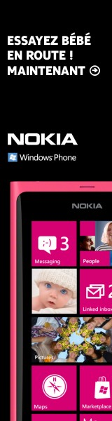
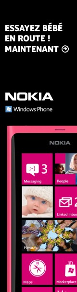

A Windows phone adventure
Let's dive into the forgotten history of Windows Phone with a micro-story, that of my first published and profitable application, on its own small scale.
Pre-history
We are in 2007, Apple has just released its very first iPhone. At that time, I was creating my company on the net (another micro-story!). I am the happy owner of a smartphone with a stylus and I am one of the die-hard iPhone resisters.
A few years later, in 2010, I fell for a Windows Phone. I love the design, the innovative approach, the simplicity and... Nokia. What nostalgia!
Microsoft, at that time, was the era of the famous "developers, developers, developers"! And they do it very well: evangelization, events, training, hackathons... It's fun and terribly tempting. I participate in a few hackathons, win a small prize and make valuable contacts.
November 2011: I'm going to be a dad!
Panic on board! Me, the slightly irresponsible geek, unable to plan a weekend in advance or call my sisters back... I'm going to be a father. It's a long-desired, awaited child... But suddenly, I don't feel ready at all.
I buy a dozen books, rent others. I devour everything about pregnancy, early childhood, guides for fathers, for mothers... But it's not enough. Where to give birth? How will it go? And what name to give him/her? I launch into frantic research.
With nights reduced to 4 or 6 hours, I suddenly have a lot of time to "geek out". At the end of 2011, I decided to embark on the creation of a mobile application. The theme is obvious: "baby on the way".
Planning
Until now, my applications were small hackathon-type projects. But this one will be used by the future mom and myself. I want it to be perfect. I tackle my reading and learning by taking notes, structuring my new knowledge and, more importantly, listing our needs as future parents. I go into total project mode: I become both Project Manager and Product Owner.
Lesson learned number 1: Planning is good, but at some point, you have to jump in.
MVP. End of 2011, I have an MVP.
Lesson learned number 2: Present and use an unfinished product.
I have dozens of ideas in mind, but I have to confront what already exists with the user's reality. I had won a new Windows Phone during a hackathon, which the future mom takes. We start using the application at home. Many independent developers do not dare to show a project they are not fully satisfied with, for fear of being judged.
I keep the circle of testers very small, but it's enough. The application evolves at a crazy speed. The update cycles are extremely short.
The "Metro" Design
If there's one thing I loved about Windows Phone, it's its design. Applications that I found (and still find) modern, sleek, perfectly framed. No useless frills, just clear guidelines to follow. I strive to respect these rules while adapting them to my needs.
With a professional-looking application, I feel ready to contact my acquaintances at Microsoft and a few successful developers again. I refine the final visual details and prepare for the big launch.
Lesson learned number 3: Taking care of the appearance is crucial!
Early 2012: Preparing for the release
During the day, I am a developer, certainly, but I am above all responsible for the digital strategies of a small communication agency. In addition to keeping my own startup alive, I help clients exist on the internet, on Google, Facebook, etc.
But the world of mobile stores, I know absolutely nothing about it. I read it in dozens of articles: most applications disappear in the depths of the stores, just as the majority of websites end up on the 300th page of Google. I'm going to have to fight.
Guerrilla Marketing
I define a very modest promotion budget: 200 euros. It will be spent in a few weeks. 100 euros for the first 3 days, to create the spark. Then 100 euros spread over the following two weeks. I place my ads where my experience has shown me the most results: Facebook and Google Ads. The budget being tight, I target my audience with surgical precision. I can't afford to aim wide just for "brand awareness". I must be formidably effective: women in a relationship, without children or with a child under one year old, approaching their thirties in peri-urban areas, and 30-35 years old in urban areas.
 

The stroke of fate
On the Microsoft store, there is an editorial highlight section, chosen by humans and not by an algorithm. I gather my courage and contact them to try to get this precious boost. To my great surprise, it's accepted!
The profitability bet
The application will not be free. Microsoft's statistics are clear: only 4 to 10% of users of free applications with a paid "upgrade" end up buying.
The last few weeks before the release, I dedicate myself to testing and precisely defining which features will be free and which will be reserved for the paid version. And above all: no advertising. I make a living from it professionally, but I hate this principle on such a personal tool.
April 2012: The big leap
Five months after learning that we were going to become parents, the application is finally ready. My excitement is at its peak, it's time to publish it. The selling price is more than modest: 0.99 euros! It is out of the question for me to make this application completely free, not even to make it known. This is however the strategy advised by Microsoft and by a book that I had loved reading a few months earlier: "What would Google do?"... But I decide to make my own bet.
First statistics!
The first three days are a mix of disappointment and hope. Disappointing by the low number of downloads. But incredibly encouraging by the reviews left, and especially because, from the beginning, I make 6 sales for only 26 downloads. The conversion ratio is well beyond all averages!
I accelerate my small marketing campaign and Microsoft highlights the application on the store's homepage (thank you!). My goal is to create enough "hype" to quickly climb the rankings and then get organic traffic.
And it works! From the beginning to the end of its existence, the application will almost always sit at the first place in the family category, and will never drop below the 3rd position.
Becoming profitable and listening to your community
There are very few negative comments. A few, however, regret the paid access or ask for new features. I develop them and add them in the following days. At the beginning, you have to be hyper-reactive. It's a truly exhilarating experience to communicate directly with end users on such a personal project, to share their joy of being future parents, just like us at that time.
That being said, some comments sometimes seem abusive to me, especially when they come from those who only use the free version.
We are now in May. In less than a month, I will be a dad. The application is at the top of the store and nearly 20% of users choose to buy the paid version. I then remember reading about "pricing strategy": if you increase the price by 100% and lose 20% of buyers, you still win financially. So I decide to raise the price to 1.99 euros. Result? Sales increase, and the comments are even better! Yet I hadn't touched a single line of code.
In June, building on this success, I repeat the maneuver: I go to 2.99 euros and I lift more limitations in the free version.
July 12, 2012.
Downloads are soaring. The ratio of paid applications exceeds 30%. No negative comments on the horizon. It's a question of perceived value: the application is the most expensive in its category, sitting proudly at the top of the store. Future parents don't want a discount application, they want the best to accompany this unique moment.
To paraphrase the movie "The Pursuit of Happyness", this chapter of my life, this tiny chapter of my life, I called it "happiness".
... And as you can imagine, it wasn't just about the success of the application.
code Under the hood: Developing for Windows Phone in 2012
Developing a Windows Phone application at the time relied on a robust and elegant ecosystem, inherited from WPF. The user interface was designed in XAML, a powerful declarative markup language, while the business logic was written in C# with the .NET Framework.
The architecture relied heavily on the MVVM (Model-View-ViewModel) pattern, allowing a clear separation between the graphical interface and the logic, thus facilitating testing and maintenance thanks to the powerful Data Binding system.
- Source code control: Everything was versioned and managed via TFS (Team Foundation Server), the ancestor of Azure DevOps.
- Multimedia: The application integrated advanced features like Video Streaming, taking advantage of the framework's native controls to offer a smooth experience.